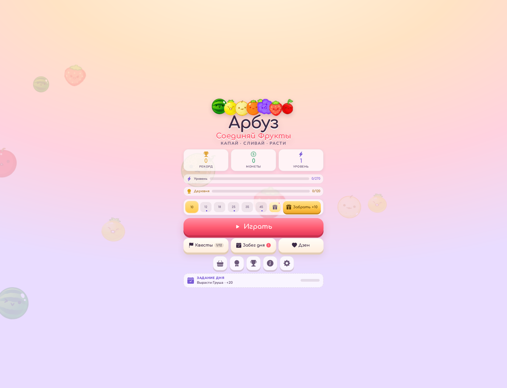

Арбуз: Соединяй Фрукты
Merge-аркада: капай фрукты, соединяй одинаковые и дорасти до арбуза. Комбо, квесты, забег дня, дзен-режим и рекорды. Играть бесплатно без установки.
Играть прямо сейчас

Об игре
Это фруктовый merge: сверху капает фрукт, одинаковые фрукты сливаются в следующий по размеру. Цель — вырастить арбуз и не переполнить поле. За очки дают монеты, на них — усиления и новые фоны. В игре есть квесты, ежедневный «Забег дня», дзен-режим без проигрыша, уровни с наградами и таблица рекордов.
Что внутри
- Управление одним пальцем — тяни и отпускай
- Комбо-цепочки и бонусы за точные слияния
- Квесты, задание дня и дзен-режим
- Уровни, монеты и достижения
- Рекорды сохраняются на устройстве
Где играть
- На этом сайте: Арбуз: Соединяй Фрукты в браузере
- ВКонтакте / VK Игры — запуск из интерфейса VK
- Яндекс Игры — без установки, с прогрессом аккаунта
- RuStore и Google Play — мобильные версии (Android)
Частые вопросы
Нужно ли скачивать? Нет: игра открывается в браузере на телефоне и компьютере.
Нужен ли аккаунт? Нет. Прогресс сохраняется на устройстве, а на площадках (VK, Яндекс) — в аккаунте.
Игра платная? Бесплатная. Внутри есть реклама и покупки — они ускоряют прогресс, но не обязательны.